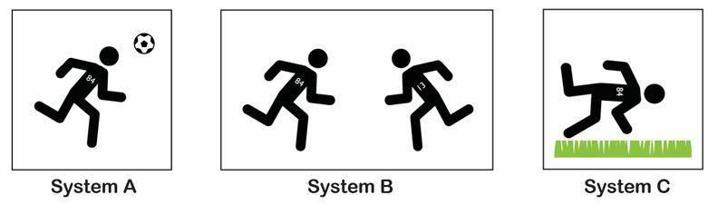
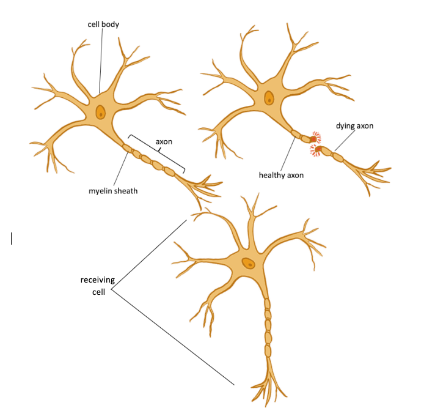

Subset of the assessment focusing on forces, energy, and concussion risk in soccer.
1. How would the forces from a header from such a light soccer ball cause a concussion? Draw two free-body diagrams showing how the amount of peak force on the head would compare to the amount of peak force on a soccer ball in a header that causes a collision.

2a. How would the amount of force on the head compare to the amount of force on the object it collides with in each system A, B, and C?
2b. Explain in words or pictures your choice in 2a.
3a. Considering both objects that are about to collide in each interaction, which system would you predict to have the least amount of total kinetic energy in the system right before the objects collide? In each instance below, player #84 is running at a speed of 7 miles per hour. Circle one.
3b. Explain in words and pictures using the images below why the system you chose in 3a would have the least amount of total kinetic energy before the collision by comparing it with the two other systems.
4. Based on your answer in 3b, which system should have the least amount of peak forces during the collision? Why?
5. The brain is an organ made of interconnected cells called neurons. Neurons send signals to communicate information from one neuron cell to another. The long part of the neuron is called an axon, and those axons have a breaking point. Recent research provides evidence that permanent damage to axons in the brain occurs from just a single damaging head collision (concussion).

Write an argument: During a head collision, which system (A, B, or C) would be most likely to cause damage to some of the axons in the brain? Use ideas related to kinetic energy, peak forces, and breaking point for these structures in the brain and axons in your argument.
6. Do you think the mass of a moving object or its speed is a bigger factor contributing to its kinetic energy and the resulting damage that it can do in a collision? Why? Use any experiences you've had as evidence in your argument as well as any science ideas you think are relevant.
7. Suggest one or more ways we could use the materials from previous investigations to determine whether doubling the mass of a moving object or doubling its speed has a bigger effect on the amount of damage that occurs in a collision.
Curated form preview from google-form.snapshot.json — matches the digitized Google Form. Open the linked form to respond or upload files.